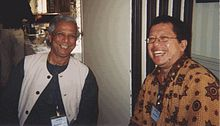

Onno W. Purbo
Seorang Pakar Teknologi Informasi

Peristiwa Penting
- Mei 1998, memimpin penulisan naskah "Kerangka Konseptual: Nusantara 21" di Yayasan Litbang Telekomunikasi Informatika (YLTI).
- 1999-2000, kepala Perpustakaan Pusat[20] Institut Teknologi Bandung (ITB).
- sejak Februari 2000, Mantan Dosen Institut Teknologi Bandung. Berdasarkan SK Mendiknas No. 533/K01.2/KP.04.2/SK/2000 tanggal 28 Februari 2000 tentang Pemberhentian dengan Hormat sebagai Pegawai Negeri Sipil ditandatangani oleh Prof.Dr.Ir. Djoko Santoso M.Sc. a.n. MENDIKNAS.
- Memberi Workshop Internet Wireless dan VoIP di beberapa negara, seperti, Afrika Selatan, Amerika Serikat, Bangladesh, Bhutan, Cambodia, Denmark, Laos, India, Malaysia, Nepal, Thailand, Timor Leste, dan Tunisia.
- Menjadi anggota advisory board pada beberapa organisasi nasional & Internasional.
- 2006Masyarakat Telematika (Mastel).
- 2006 UNDP Asia-Pacific Development Information Programme (APDIP).
- Pernah menjabat di pengurusan ORARI Lokal dan Daerah Jawa Barat maupun Jakarta.
- Sejak tahun 2006, menjadi koordinator bagian Pendidikan & Latihan (Diklat) di pengurus ORARI Pusat yang materinya dihosting di beberapa situs di Internet.
- Sejak 17 Juli 2006 bergabung dengan Wikipedia Indonesia dengan nama pengguna Onnowpurbo
- Sejak tahun 2007, membina Kelompok Remaja Melek IT (Kerm.IT) di lingkungan Kemayoran, Jakarta Pusat.
- 2011 - 2016, aktif mengajar di STKIP Surya, Summarecon Serpong, Tangerang.
- 2013 - 2016,it aktif juga mengajar di Surya University, Summarecon Serpong, Tangerang. Surya University merupakan research based university yang didirikan oleh tokoh pendidikan dan fisikawan Yohanes Surya.
- Sejak 2017, aktif mengajar Paska Sarjana di IIB Darmajaya, Lampung.
Referensi Wikipedia